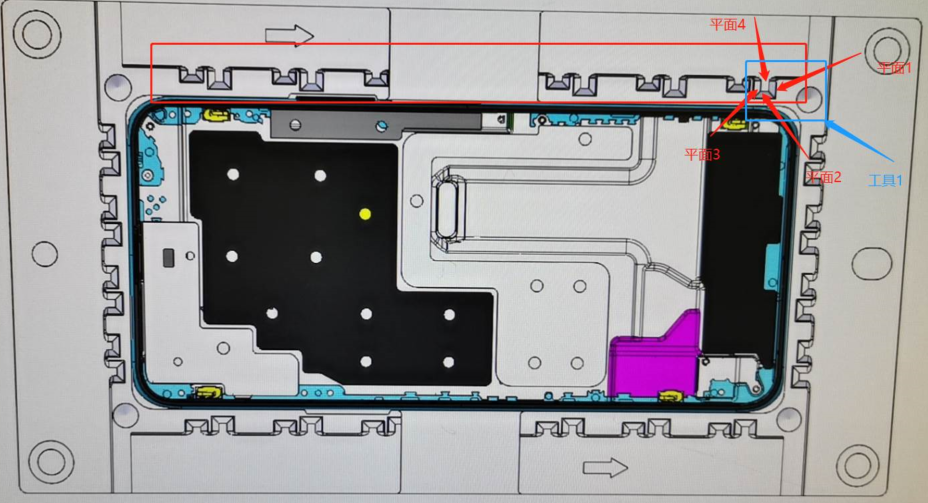
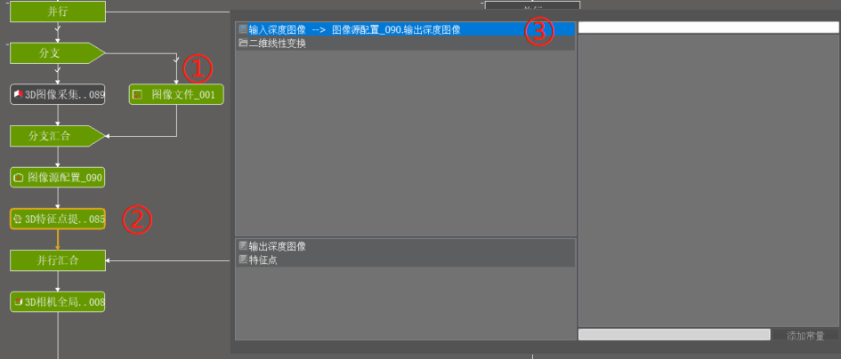
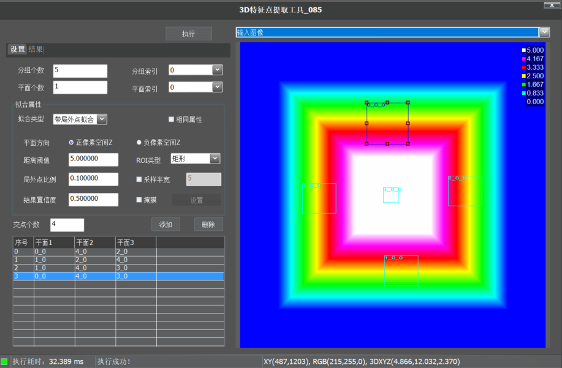
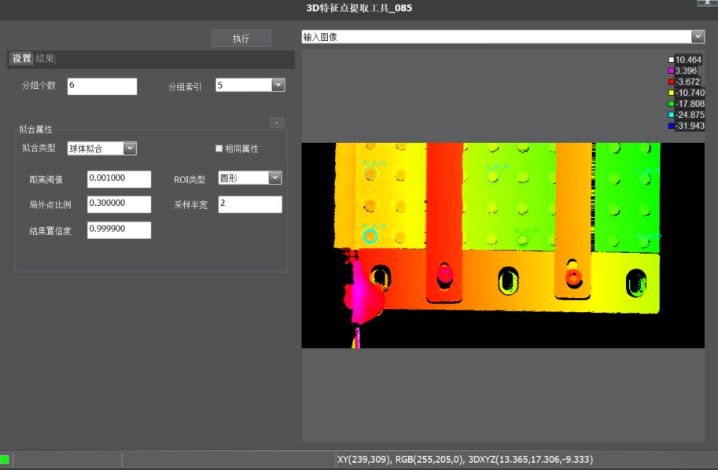
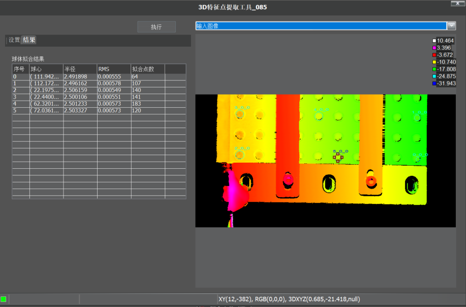
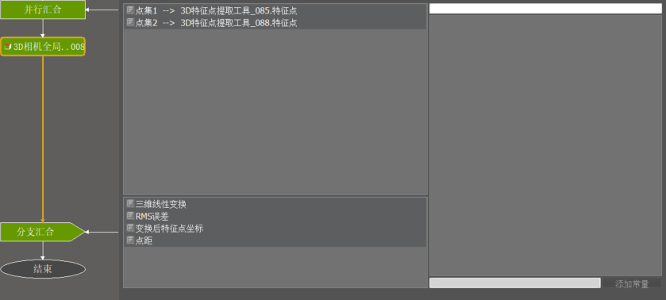

3D特征点提取
1. 功能概述
按照特征点类型，可以是多平面求交点，也可以是球体拟合得到的特征点，获得相机坐标系下的点集坐标。
2. 应用场景
在工业生产中，3D引导应用非常广泛，如立体空间中引导打胶，机械手抓取不在同一个平面内的零部件等等，都会涉及到三维空间信息，那么就需要相应的标定技术，将相机坐标系转换到世界坐标下。在标定时，需要知道相机坐标系下的点集和对应的世界坐标系下的点集，通过两个点集来计算相机坐标系和世界坐标系之间的三维线性变换关系。世界坐标系下的点集坐标，通常由标定物厂家确定，是已知的，而相机坐标系下的点集坐标，则可以通过多平面交点工具来获取。
如图所示，蓝框内为一个标定特征，通过图示四个平面可获得多个交点，整个产品中有多个标定特征，通过这些标定特征和多平面交点工具，即可获得相机坐标系下的点集坐标。

3. 使用向导
添加工具，载入图像

设置拟合属性、分组个数、分组索引
- 拟合类型为区间拟合或者是带局外点拟合
- Step 1 根据分组个数、平面个数在输入深度图像上添加需要的ROI；
- Step 2 根据拟合类型选择相应的拟合参数，保证拟合效果；
- Step 3 根据需要的交点个数，添加平面；
- Step 4 在列表中选择想要的平面编号

- 拟合类型为球体拟合
- Step 1 根据分组个数在输入深度图像上添加需要的ROI；
- Step 2 根据拟合类型选择相应的拟合参数，保证拟合效果；

查看结果
拟合类型为区间拟合或者是带局外点拟合

拟合类型为球体拟合

使用特征点提取结果，作为3D相机全局标定等工具的输入点集

5. 常见问题
| 现象描述 |
解决方法 |
| 平面个数和平面索引消失 |
切换为平面拟合模式，会再次出现 |
| 平面拟合的时候得不到特征点 |
看列表中选择的平面索引是否对应 |
| 球体拟合拟合不出球心 |
一开始先放宽距离阈值 |
6. 参数说明
输入参数
| 参数名称 |
参数说明 |
| 输入深度图像 |
输入用于特征点提取的深度图像。 |
输出参数
| 参数名称 |
参数说明 |
| 输出深度图像 |
输出特征点提取后的深度图像。 |
| 特征点 |
特征点坐标 |
7. 示例工程
参见“\Samples\3D特征点提取工具.gvp”。